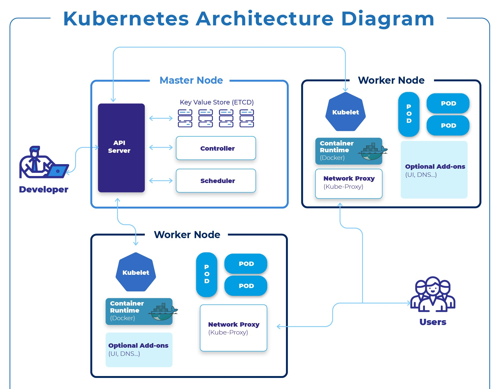
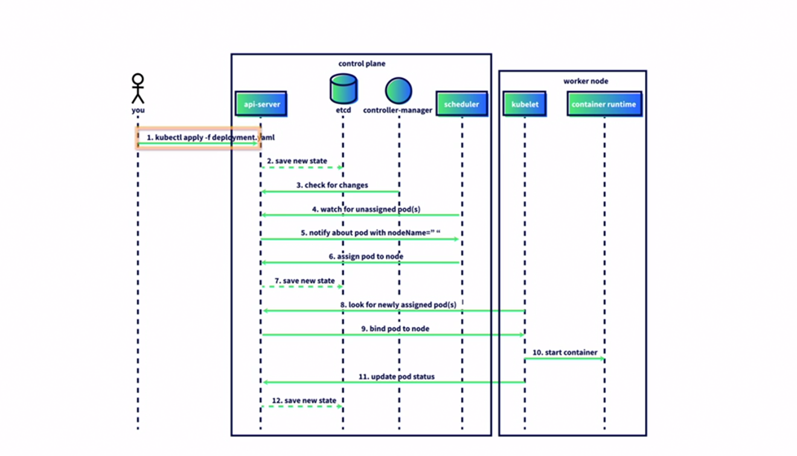
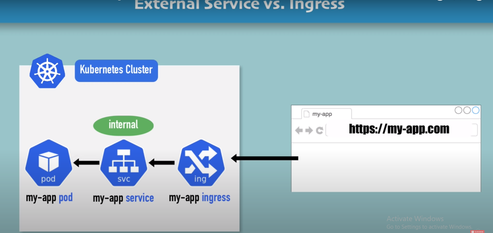
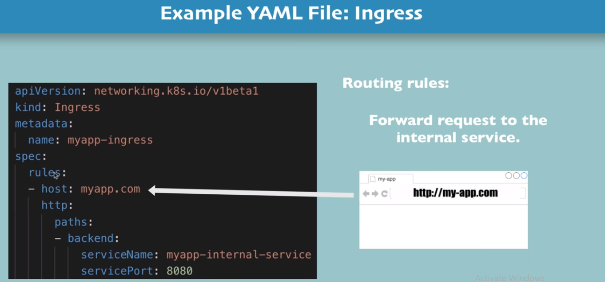
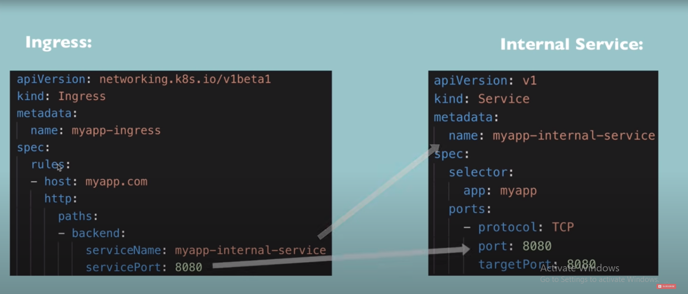
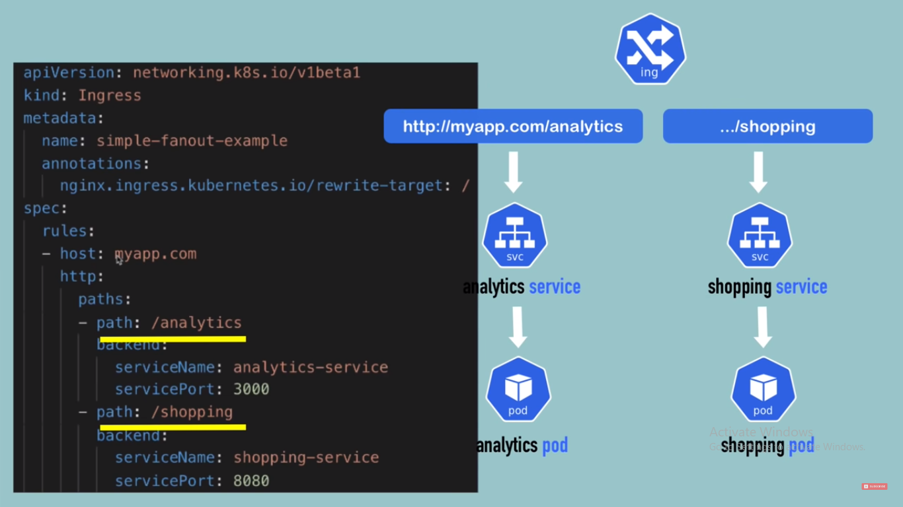
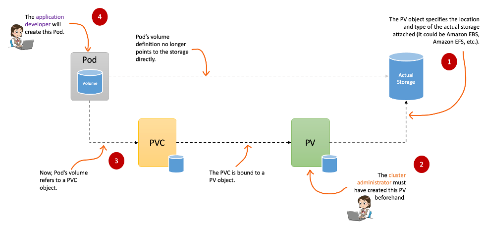

Kubernetes
- Kubernetes
- Overview
- Architecture
- K8 components
- Minikube abd Kubectl-Setup
- Helm
- Volumes-Persisting Data
- K8 stateful set
Overview
Defination
Kubernetes is a portable, extensible, open source platform for managing containerized workloads and services, that facilitates both declarative configuration and automation. It has a large, rapidly growing ecosystem. Kubernetes services, support, and tools are widely available.
- For more information visit here
Why to use K8
Containers are a good way to bundle and run your applications. In a production environment, you need to manage the containers that run the applications and ensure that there is no downtime. For example, if a container goes down, another container needs to start. Wouldn't it be easier if this behavior was handled by a system?
That's how Kubernetes comes to the rescue! Kubernetes provides you with a framework to run distributed systems resiliently. It takes care of scaling and failover for your application, provides deployment patterns, and more. For example: Kubernetes can easily manage a canary deployment for your system.
- Kubernetes provides you with:
- Service discovery and load balancing Kubernetes can expose a container using the DNS name or using their own IP address. If traffic to a container is high, Kubernetes is able to load balance and distribute the network traffic so that the deployment is stable.
- Storage orchestration Kubernetes allows you to automatically mount a storage system of your choice, such as local storages, public cloud providers, and more.
Automated rollouts and rollbacks You can describe the desired state for your deployed containers using Kubernetes, and it can change the actual state to the desired state at a controlled rate. For example, you can automate Kubernetes to create new containers for your deployment, remove existing containers and adopt all their resources to the new container. Automatic bin packing You provide Kubernetes with a cluster of nodes that it can use to run containerized tasks. You tell Kubernetes how much CPU and memory (RAM) each container needs. Kubernetes can fit containers onto your nodes to make the best use of your resources.
Self-healing Kubernetes restarts containers that fail, replaces containers, kills containers that don't respond to your user-defined health check, and doesn't advertise them to clients until they are ready to serve.
Secret and configuration management Kubernetes lets you store and manage sensitive information, such as passwords, OAuth tokens, and SSH keys. You can deploy and update secrets and application configuration without rebuilding your container images, and without exposing secrets in your stack configuration.
Architecture
- Architecture Diagram

- K8 workflow diagram

K8 components
Deployment
Node
Pod
Service
service types
-
Cluster IP
-
ClusterIP is the default and most common service type.
- Kubernetes will assign a cluster-internal IP address to ClusterIP service. This makes the service only reachable within the cluster.
- You cannot make requests to service (pods) from outside the cluster.
- You can optionally set cluster IP in the service definition file.
Use Cases: Inter service communication within the cluster. For example, communication between the front-end and back-end components of your app.
apiVersion: v1
kind: Service
metadata:
name: my-backend-service
spec:
type: ClusterIP # Optional field (default)
clusterIP: 10.10.0.1 # within service cluster ip range
ports:
- name: http
protocol: TCP
port: 80
targetPort: 8080
-
NodePort
-
NodePort service is an extension of ClusterIP service. A ClusterIP Service, to which the - - NodePort Service routes, is automatically created.
- It exposes the service outside of the cluster by adding a cluster-wide port on top of ClusterIP.
- NodePort exposes the service on each Node’s IP at a static port (the NodePort). Each node proxies that port into your Service. So, external traffic has access to fixed port on each Node. It means any request to your cluster on that port gets forwarded to the service.
- You can contact the NodePort Service, from outside the cluster, by requesting
: . - Node port must be in the range of 30000–32767. Manually allocating a port to the service is optional. If it is undefined, Kubernetes will automatically assign one.
- If you are going to choose node port explicitly, ensure that the port was not already used by another service.
```Use Cases : When you want to enable external connectivity to your service. Using a NodePort gives you the freedom to set up your own load balancing solution, to configure environments that are not fully supported by Kubernetes, or even to expose one or more nodes’ IPs directly. Prefer to place a load balancer above your nodes to avoid node failure.
```yaml
apiVersion: v1
kind: Service
metadata:
name: my-frontend-service
spec:
type: NodePort
selector:
app: web
ports:
- name: http
protocol: TCP
port: 80
targetPort: 8080
nodePort: 30000 # 30000-32767, Optional field
-
LoadBalancer
-
LoadBalancer service is an extension of NodePort service. NodePort and ClusterIP Services, to which the external load balancer routes, are automatically created.
- It integrates NodePort with cloud-based load balancers.
- It exposes the Service externally using a cloud provider’s load balancer.
- Each cloud provider (AWS, Azure, GCP, etc) has its own native load balancer implementation. - The cloud provider will create a load balancer, which then automatically routes requests to your Kubernetes Service.
- Traffic from the external load balancer is directed at the backend Pods. The cloud provider decides how it is load balanced.
- The actual creation of the load balancer happens asynchronously.
- Every time you want to expose a service to the outside world, you have to create a new LoadBalancer and get an IP address.
Use Cases: When you are using a cloud provider to host your Kubernetes cluster.
apiVersion: v1
kind: Service
metadata:
name: my-frontend-service
spec:
type: LoadBalancer
clusterIP: 10.0.171.123
loadBalancerIP: 123.123.123.123
selector:
app: web
ports:
- name: http
protocol: TCP
port: 80
targetPort: 8080
-
ExternalName
-
Services of type ExternalName map a Service to a DNS name, not to a typical selector such as my-service.
- You specify these Services with the
spec.externalNameparameter. - It maps the Service to the contents of the externalName field (e.g. foo.bar.example.com), by returning a CNAME record with its value.
- No proxying of any kind is established.
```Use Cases : This is commonly used to create a service within Kubernetes to represent an external datastore like a database that runs externally to Kubernetes. You can use that ExternalName service (as a local service) when Pods from one namespace to talk to a service in another namespace.
```yaml
apiVersion: v1
kind: Service
metadata:
name: my-service
spec:
type: ExternalName
externalName: my.database.example.com
Ingress
Architecture of Ingress

Ingress YAML

Ingress Vs Internal Service

Ingress YAML for path

Volumes
Backup Volumes
StorageClass
-
follow the docs for further info of StorageClass
-
template for storageclass
apiVersion: storage.k8s.io/v1
kind: StorageClass
metadata:
name: azurefile-sc
provisioner: kubernetes.io/azure-file
reclaimPolicy: Retain
mountOptions:
- dir_mode=0777
- file_mode=0777
volumeBindingMode: WaitForFirstConsumer
-
Field/Parameters details:
-
volumeBindingMode: This field specifies when volume binding should occur. In this case, Immediate means that a volume should be provisioned and bound as soon as a PersistentVolumeClaim (PVC) is created. This is in contrast to WaitForFirstConsumer, where the binding is delayed until a pod using the PVC is scheduled onto a node.
-
reclaimPolicy : in Persistent Volumes specifies what should happen to the underlying storage when the associated PersistentVolume (PV) is released or the PersistentVolumeClaim (PVC) is deleted:
Retain: When the reclaimPolicy is set to Retain, the PV is not automatically deleted when the associated PVC is deleted. The PV is marked as released, and it's up to the cluster administrator to decide what to do with the data on the storage.
Delete: When the reclaimPolicy is set to Delete, the PV is automatically deleted when the associated PVC is deleted. The storage resources associated with the PV are also deleted.
-
Architecture of Persistent Volume
